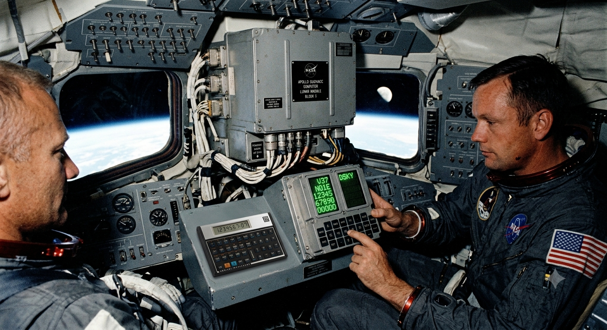
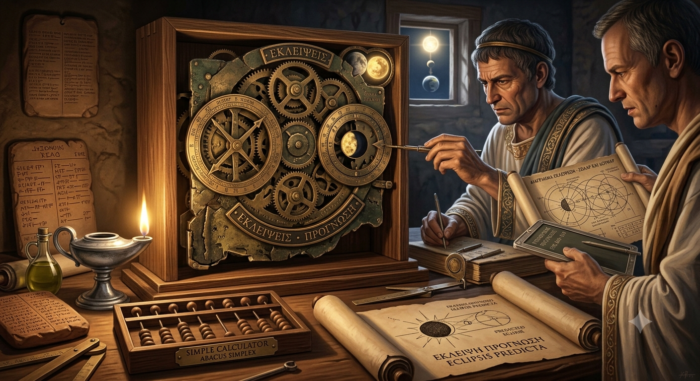
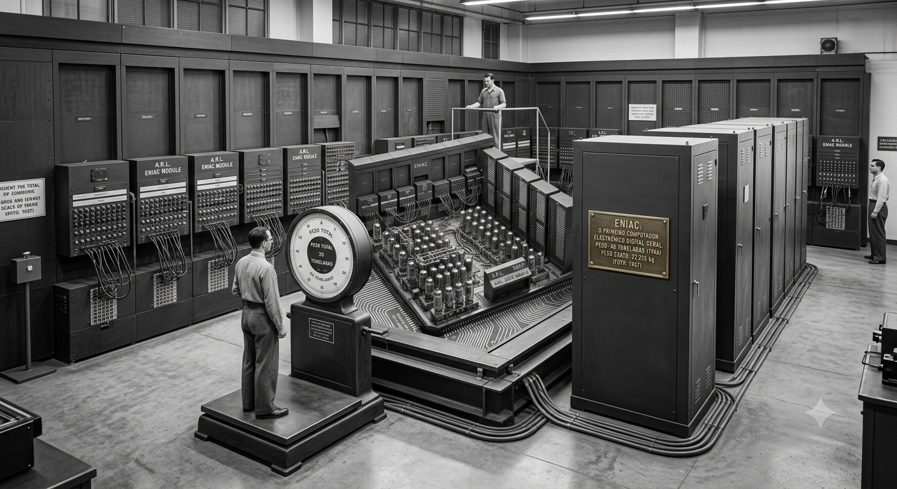
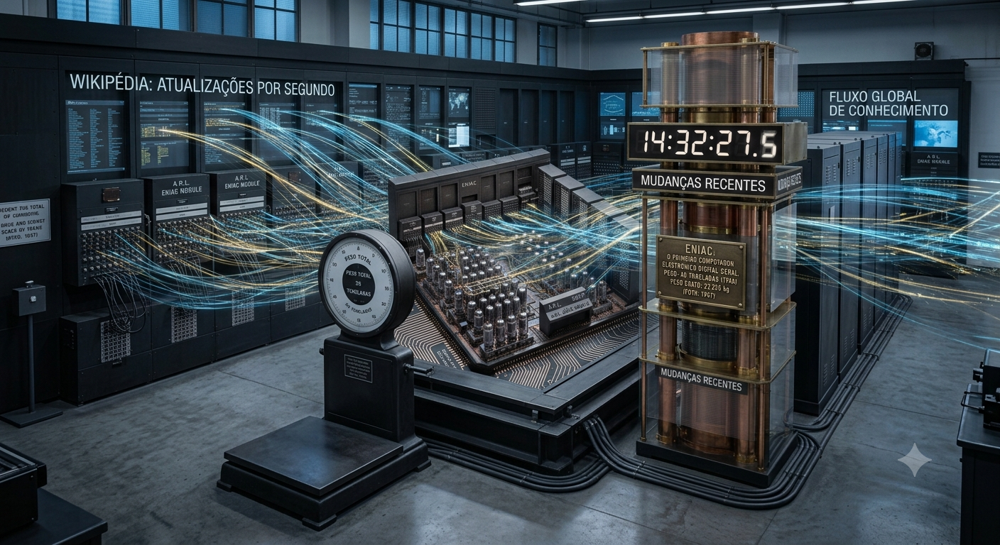
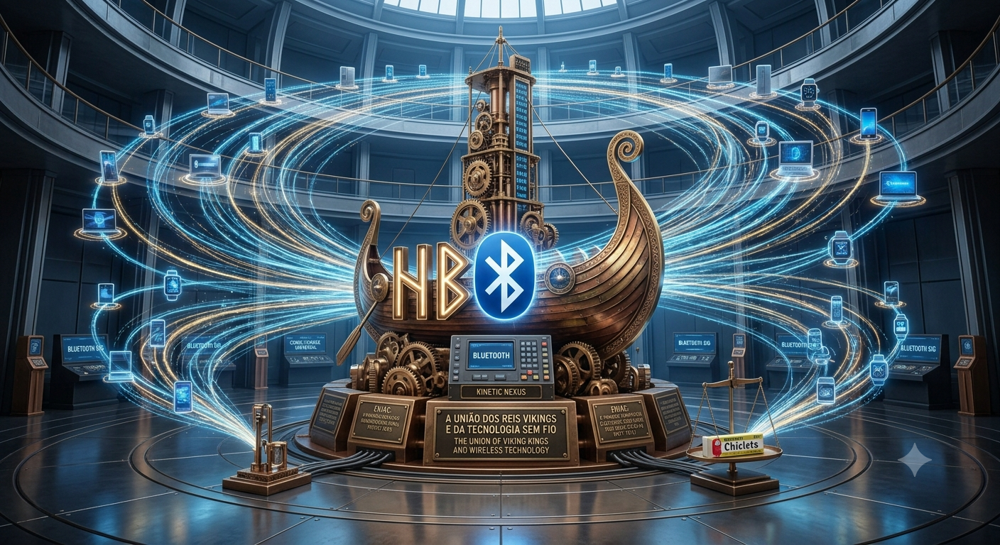

Meu primeiro post
Por: Daniele
Boas-vindas ao meu novo blog! Aqui vou compartilhar dicas de programação e curiosidades da área de tecnologia.
Vou compartilhar conhecimentos sobre tecnologia e programação
Por: Daniele
Boas-vindas ao meu novo blog! Aqui vou compartilhar dicas de programação e curiosidades da área de tecnologia.

Por: Daniele
O computador de navegação das missões Apollo possuía cerca de 72 KB de memória. Atualmente, até dispositivos muito simples têm muito mais capacidade.
Fonte: NASA – Apollo Guidance Computer

Por: Daniele
O Mecanismo de Anticítera tinha dezenas de engrenagens e funcionava como uma calculadora astronômica muito avançada para sua época.
Fonte: Museu Britânico — Antikythera Mechanism
Por: Daniele
O primeiro mouse foi criado em 1964 por Douglas Engelbart. O protótipo tinha uma caixa de madeira, duas rodas metálicas e um cabo saindo pela parte traseira, que inspirou o apelido “mouse”.
Fonte:Computer History Museum — Douglas Engelbart and the Mouse

Por: Daniele
O ENIAC, construído em 1946, ocupava um andar inteiro de 167 metros quadrados e consumia tanta energia que as luzes da cidade de Filadélfia piscavam quando ele era ligado.
Fonte:U.S. Army Research Laboratory

Por: Daniele
O equivalente a mais de duas edições por segundo são feitas por voluntários ao redor do mundo em tempo real, tornando-a o maior projeto colaborativo da história.
Wikimedia Foundation Statistics

Por: Daniele
O nome homenageia o rei viking Harald "Bluetooth", que unificou tribos na Escandinávia, assim como o recurso une aparelhos.
Bluetooth SIG

Por: Daniele
Criado em 1991 por Tim Berners-Lee, ele explicava o que era a World Wide Web e como criar páginas na internet.
CERN – The First Website